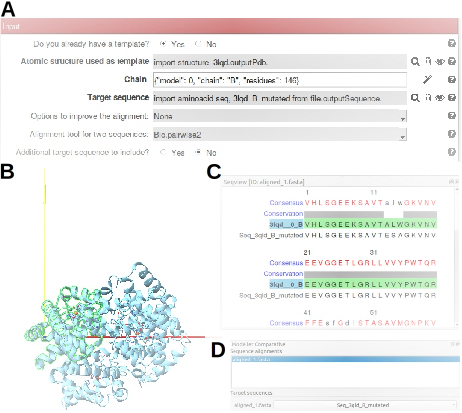
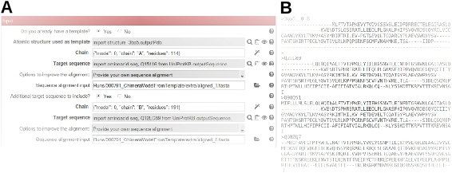
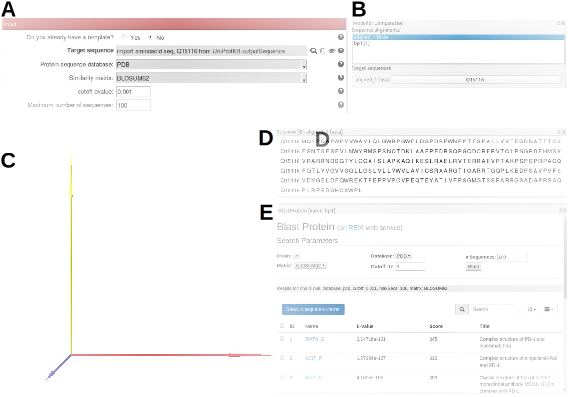

19. Model from Template protocol¶
WARNING: Working with Modeller requires a license key, which can be requested
free of charge for academic users. Try to have this license key before
starting the protocol execution.- Requirements to run this protocol and visualize results:
- Scipion plugin: scipion-em
- Scipion plugin: scipion-em-chimera
- Multiple sequence alignment tools: Clustal Omega, MUSCLE
- Scipion menu: Model building -> Initial model (Fig. 19.1 (A))
- Protocol form parameters (Fig. 19.1 (B)):
- Input section
- Do you already have a template?: Select “Yes” if you have found your template in a previous similarity searching step. Select “No” if you do not have any template to start the homology modeling and you would like to search for one.
- Option “Yes” (Fig. 19.1 (B))
- Atomic structure used as template: Atomic structure previously downloaded in Scipion. This structure was selected by sequence homology, i.e. by looking for the structurally characterized sequence more similar (with higher identity) to the target sequence.
- Chain: Specific monomer of the macromolecule that has to be used as structure template of the target sequence. Use the wizard on the right side of Chain parameter to select that chain.
- Target sequence: Sequence previously downloaded in Scipion. This sequence has to be modeled following the structure skeleton of the selected template.
- Options to improve the alignment: Modeller provides structural models of the target sequence based on a sequence alignment, in which at least sequences of template and target have to be included. Three options can be considered to improve this alignment:
- None: No more sequences are going to be included in the alignment except model and target sequences.Correlative param:*** Alignment tool for two sequences: Select one of the three available alignment methods, Bio.parirwise2 (by default), Clustal Omega, MUSCLE.
- Additional sequences to align if you want to perform a multiple sequence alignment (MSA) adding other sequences already downloaded in Scipion. Additional sequences, others than template and target sequences, are required to accomplish this MSA.Correlative params:*** Other sequences to align: Box to complete with the additional sequences used to perform the multiple sequence alignment. All of them were previously downloaded in Scipion.*** Multiple alignment tool: Select between Clustal Omega and MUSCLE methods.
- Provide your own sequence alignment: If you want to include other sequences in the alignment by providing your own sequence alignment.Correlative param:*** Sequence alignment input: Complete this box with the help of the right side browser including the sequence alignment file that you already have saved in your computer. Different alignment formats are available. An example of alignment in fasta format can be seen below (Use case 3).
- Additional target sequence to include?: Select “Yes” if you’d like to obtain a multimer model by using two target sequences and the same multimer template. The params to complete the option “Yes” are identical to those already shown, with the exception of the Atomic structure used as template, already completed. However, no one of those params will appear in case you select “No” in order to obtain a model by using only one target sequence.
- Option “No” (Fig. 19.1 (C))
- Target sequence: Sequence previously downloaded in Scipion. This sequence has to be modeled following the structure skeleton of the template that you are going to select among the retrieved entries found by the similarity searching tool.
- Protein sequence database: Select one of the two suggested protein sequence databases, PDB and NR. Press the “?” symbol on the right to see the meaning of each one. Remark that the NR database allows you to get entries with, as well as without, atomic structure associated. These ones, which do not provide templates, could be useful to build a better sequence alignment.
- Similarity matrix: Select one of the “substitution matrix” to assign a score to any couple of residues in the alignment.
- cutoff evalue: Maximum statistic value required to include a retrieved element in the hit list.
- Maximum number of sequences that you’d like to retrieve from the database.
- Help sectionFollow this section steps to run Modeller via web service in ChimeraX and to select and save one of the retrieved models in Scipion framework.
- Protocol execution:Adding specific template-target label is recommended in Run name section, at the form top. To add the label, open the protocol form, press the pencil symbol on the right side of Run name box, complete the label in the new opened window, press OK and, finally, close the protocol. This label will be shown in the output summary content (see below). If you want to run again this protocol, do not forget to set to Restart the Run mode.Press the Execute red button at the form bottom.Several ChimeraX windows will be opened after executing the protocol with different contents according to the distinct form param options. Although we are going to detail some of them through several use cases (see below), designed to ilustrate different applications of this protocol, as well as the procedure to follow in each case, in general we can predict the opening of ChimeraX graphics window and a sequence alignment window. Usually, in both windows the template sequence is green highlighted (see an example of these windows in Fig. 9.6). Main steps to follow ahead are:
- Ask for model(s) to Modeller by selecting Tools -> Sequence -> Modeller Comparative in the main menu of ChimeraX graphics window.
- Complete the new window opened for Modeller Comparative with the sequence alignment that includes the template and with the target(s) sequence(s), Modeller license key, multichain model, number of models retrieved by Modeller, and Advanced options like the building of models with hydrogens, as well as model inclusion of heteroatoms or water molecules. An example of completed Modeller window can be observed in Fig. 9.7 (A). By pressing OK the computation starts. The status of the job can be checked in the lower left corner of ChimeraX graphics window.
- After a while a new panel window will show the retrieved models of the target sequence (Fig. 9.7 (B)). Two statistics assess these models: GA341, statistical potentials derived-score, and zDOPE, normalized Discrete Optimized Protein Energy, atomic distance depending-score. Reliable models show GA341 values higher than 0.7, and negative zDOPE values correspond to better models. Retrieved models can be checked in ChimeraX Tools -> Models. One of them should be selected (Fig. 9.7 (C)).
- Rename the selected model, for example #n_initial to #n_final with ChimeraX command line:
rename #n_initial id #n_final
- Save the retrieved model selected according to the new model number in the Scipion track system (#n_final) shown in ChimeraX Tools -> Models by writing in command line:
scipionwrite #n_final prefix user_defined_name_
- Visualization of protocol results:After executing the protocol, press Analyze Results and ChimeraX graphics window will be opened by default. Atomic structures are referred to the origin of coordinates in ChimeraX. To show the relative position of the atomic structure, the three coordinate axes are represented; X axis (red), Y axis (yellow), and Z axis (blue) (Fig. 5.3). Coordinate axes and selected atomic structure model are model numbers #1 and #2, respectively, in ChimeraX Models panel if only one structure has been saved.
- Summary content:
- Protocol output (below Scipion framework):chimerax - model from template -> name of the new atomic structure;AtomStruct (pseudoatoms=True/ False, volume=True/ False).Pseudoatoms is set to True when the structure is made of pseudoatoms instead of atoms. Volume is set to True when an electron density map is associated to the atomic structure.
- SUMMARY box:Produced files:we have some result
{kind=link}
19.1. USE CASES¶
- Use Case 1: Input atomic structure as template, 1 target sequence, Option “None” to improve the alignmentAim: To model a target sequence using one chain of a homologous atomic structure as template, using only the sequences of target and template in the sequence alignment.
Fig. 19.2 (A) Protocol form of chimerax-model from template. (B) ChimeraX view of the template atomic structure, highlighted in green the chain B selected to perform the modeling. (C) ChimeraX sequence view panel showing the sequence alignment between the template chain B sequence, greeen highlighted, and the target sequence. (D) Upper part of the ChimeraX Modeller comparative panel showing the sequence alignment selected, shown in (C), and the selected target sequence.¶
Protocol execution: Complete the protocol form as indicated in Fig. 19.2 (A). Follow the general procedure shown above (Protocol execution section). Windows (B) and (C) will appear. Open and complete the Modeller Comparative panel as indicated in (D) and wait for a while. After getting the retrieved models, if you want to select, for example, the target model #3.2, write in ChimeraX command line:rename #3.2 id #4 scipionwrite #4 prefix model_3_2_
And ChimeraX Quit to close the protocol. Visualize your results. - Use Case 2: Input atomic structure as template, 2 target sequences, Option “Additional sequences to align” to improve the alignment, multichain modeling option in ModellerAim: To model simultaneously two target sequences to obtain a multichain model using two chains of a homologous atomic structure as templates, using other additional sequences than target and template in the sequence alignment.
![(A) Protocol form of **chimerax-model from template**. Remark that two additional sequences other than *template* and *target* sequences have been selected to improve both alignments. (B) Upper part of the *ChimeraX Modeller comparative* panel showing the two sequence alignment selected, shown in (D) and (E), and the two selected *target* sequences.(C) *ChimeraX* view of the *template* atomic structure, highlighted in yellow the *chain A* and in green the *chain B* selected to perform the modeling. (D) *ChimeraX* sequence view panel showing the sequence alignment between the *template* *chain A* sequence, greeen highlighted, the *target* sequence (*Q15116*) and two more additional sequences. (E) *ChimeraX* sequence view panel showing the sequence alignment between the *template* *chain B* sequence, greeen highlighted, the *target* sequence (*Q12LC89*) and two more additional sequences.](../../../../../_images/Fig306.svg)
Fig. 19.3 (A) Protocol form of chimerax-model from template. Remark that two additional sequences other than template and target sequences have been selected to improve both alignments. (B) Upper part of the ChimeraX Modeller comparative panel showing the two sequence alignment selected, shown in (D) and (E), and the two selected target sequences.(C) ChimeraX view of the template atomic structure, highlighted in yellow the chain A and in green the chain B selected to perform the modeling. (D) ChimeraX sequence view panel showing the sequence alignment between the template chain A sequence, greeen highlighted, the target sequence (Q15116) and two more additional sequences. (E) ChimeraX sequence view panel showing the sequence alignment between the template chain B sequence, greeen highlighted, the target sequence (Q12LC89) and two more additional sequences.¶
Protocol execution: Complete the protocol form as indicated in Fig. 19.3 (A). Follow the general procedure shown above (Protocol execution section). Windows (C), (D) and (E) will appear. Open and complete the Modeller Comparative panel as indicated in (B) and wait for a while. After getting the retrieved models, if you want to select, for example, the target model #3.2, write in ChimeraX command line:rename #3.2 id #4 scipionwrite #4 prefix model_3_2_
And ChimeraX Quit to close the protocol. Visualize your results. - Use Case 3: Input atomic structure as template, 2 target sequences, Option “Provide your own sequence alignment” to improve the alignment, multichain modeling option in ModellerAim: To model simultaneously two target sequences to obtain a multichain model using two chains of a homologous atomic structure as templates, using your own MSA.
Fig. 19.4 (A) Protocol form of chimerax-model from template. Remark that your own sequence alignment containing the sequences of template and target, among others, have been selected. (B) Example of sequence alignment in fasta format (file “aligned_2.fasta”) that includes the template chain B sequence, the target sequence (Q12LC89) and two more additional sequences.¶
Protocol execution: Complete the protocol form as indicated in Fig. 19.4 (A). Follow the general procedure shown above (Protocol execution section). Remark that you already have a MSA file for each target saved in your computer. An example of MSA can be seen in (B). Windows (C), (D) and (E) of previous . Open and complete the Modeller Comparative panel as indicated in Fig. 19.4 (B) and wait for a while. After getting the retrieved models, if you want to select, for example, the target model #3.2, write in the command line:rename #3.2 id #4 scipionwrite #4 prefix model_3_2_
And ChimeraX Quit to close the protocol. Visualize your results. - Use Case 4: Input 1 target sequence, PDB searching databaseAim: To model a target sequence without previous information of a possible atomic structure template.
Fig. 19.5 (A) Protocol form of chimerax-model from template that includes the target sequence that we’d like to model. (B) Upper part of the ChimeraX Modeller comparative panel showing the sequence alignment and the target sequence selected. (B) ChimeraX graphics window empty before opening the template atomic structure. (D) ChimeraX sequence view panel showing the target sequence. (E) ChimeraX BlastProtein panel showing the retrieved results from PDB database.¶
Protocol execution: Complete the protocol form as indicated in Fig. 19.5 (A). Follow the general procedure shown above (Protocol execution section). Remark that in this case there is no template atomic structure. Instead, an empty ChimeraX graphics window will appear (C) together with the target sequence that we’d like to model and BLASTP retrieved results (E). Note that it could take some seconds the opening of the BlastProtein panel. Have a look to these results and select one of them as possible template of your target sequence. In this particular case, for example, we are going to choose the first one (5WT9). Open this atomic structure in ChimeraX by writing in the command line:open 5wt9
At this point, open the Modeller Comparative panel and complete it as indicated in Fig. 19.5 (B). Wait for a while. After getting the retrieved models, if you want to select, for example, the target model #3.2, write in the command line:rename #3.2 id #4 scipionwrite #4 prefix model_3_2_
And ChimeraX Quit to close the protocol. Visualize your results.
{kind=link}
{kind=link}
{kind=link}